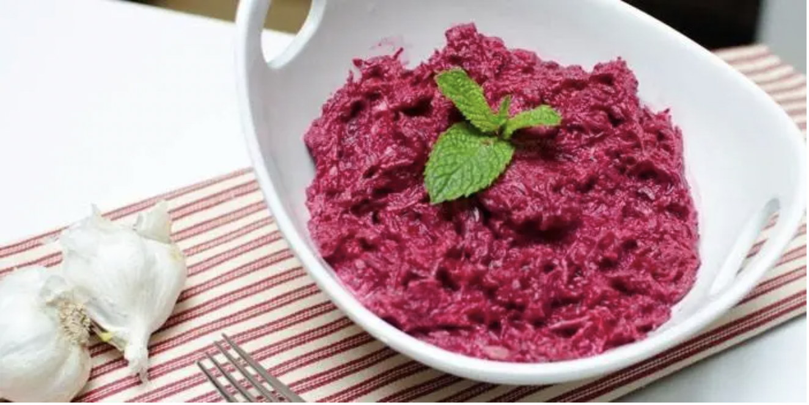

Novelty Salad

Description
A super-tasty salad, which can be made healthier if you replace mayo with olive oil.
Ingredients
- 60g beetroot
- 20g raisins
- 20g mayo
Steps
- Cook beetroot in boiling water.
- Let the beetroot cool down.
- Peel the beetroot and cut it in cubes.
- Wash raisins and add them to the beets.
- Add mayo.